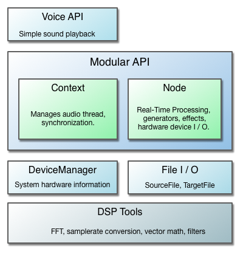

This document provides an overview of the audio capabilities in Cinder. You can use this, along with the samples in the samples/_audio folder, as an entry point into the
ci::audio
namespace.
Design
The ci::audio namespace consists of a few different components and layers of abstraction:

The design is meant to accomodate a wide range of applications. The Voice API is appropriate when you simply need to play an audio track, or want a simple way to write to a continuous audio stream using a callback.
The core of the design is the modular API, which provides a set of extendable audio tools that can be connected in flexible ways depending on an application's needs. For those who plan to do extensive audio work with Cinder, they will be served best by using the Node system. It draws from concepts found in other popular modular audio API's, namely Web Audio and Pure Data, while combining many of Cinder's existing design patterns. We also take full advantage of C++11 features such as smart pointers, std::atomic's, and std::mutex's.
A modular API is advantageous because it is proven to be very flexible and allows for reusability without a significant loss in performance. Still, higher level constructs exist and more will be added as time permits. The Cinder philosophy remains, "easy things easy and hard things possible."
For those looking for raw DSP functionality, the ci::audio::dsp namespace contains a range of high performance tools for most audio processing tasks. They are used by the available Nodes and provide building blocks for custom Node classes or any other audio processing purposes.
Note on code snippets
For the sake of trying to keep the code snippets short, it is assumed that the code is in a .cpp file and there is a using namespace ci; within scope, so the ci:: qualifier has been dropped.
Voice - simple audio file or callback player
For those who need only to play back a sound file or want a simple processing function, you may not need to look further than what is provided in the Voice API. Voices are high level objects that sit above the modular system, managing a small chain of audio::Nodes that perform the necessary processing. They are meant to require little work on the user's part, so you don't need to worry about things like what the playback samplerate is or to what hardware device audio is sent, at the cost of less flexibility.
The following is an example of how to play a sound file with an audio::Voice (Details about how to load sound files will be explained in the section on SourceFile and SamplePlayerNode):
// declare somewhere in your class interface:
audio::VoiceRef mVoice;
void MyApp::setup()
{
audio::SourceFileRef sourceFile = audio::load( app::loadAsset( "soundfile.wav" ) );
mVoice = audio::Voice::create( sourceFile );
// Start playing audio from the voice:
mVoice->start();
}
Later, you can call mVoice->stop() when you want to quit playing audio.
The audio::Voice::create() method returns a shared_ptr to a Voice sub-class (ex, in the case of playing an audio file, returns VoiceSamplePlayerRef, but the user will generally only need to maintain this by storing it in a VoiceRef instance variable. It is necessary to store the returned VoiceRef because once it goes out of scope, it will be disconnected from the audio graph and destroyed. This is fairly cheap, however (much cheaper than creating the SourceFile via audio::load(), for example), so if you need to later play a different file, you can safely call Voice::create() again and assign it to your mVoice instance variable.
You can also use a Voice for basic audio processing by providing a std::function callback to the create() method. This can be useful for educational purposes or quick experiments.
Users should be aware that the callback is processing on the background audio thread, so any data that interacts with the main thread needs to be synchronized.
Each Voice has controls for volume and 2D panning. Here is an example of how you'd control these with the mouse:
Before jumping into the meat and potatoes, it's a good idea to be introduced to audio::Buffer, the class used for passing audio samples around in ci::audio. Audio data is most commonly handled in two different manners:
a contiguous stream of 'blocks' of equal length, which is how real-time processing is achieved.
as a single unit, such as the uncompressed data of sound file.
In both cases, there is a number of frames (a frame consists of a sample for each channel) and a number of channels that make up the layout of the Buffer. Usually Buffers are passed by pointer if they are only meant to be filled (like from a process function) or shared_ptr<Buffer> (BufferRef's) if it makes sense to hold onto a shared buffer. This isn't required though, and in some cases you indeed want to copy the entire Buffer, such as multi-threaded situations where you are passing a Buffer from the audio thread back to the main thread. For these cases, the copy constructor is enabled.
It is also important to note that samplerate is not a property of the buffer data - this is to allow for flexibility of how the data is interpreted. Instead, samplerate is determined from the context in which the audio data is being used.
Layout
The standard Buffer class used when passing audio between different components stores its channels contiguously (non-interleaved). This means that right after channel 0 (ex. left speaker) ends, the next sample in the internal array is the first sample of channel 1 (ex. right speaker). For convenience, the Buffer::getChannel( size_t ) method with return a float* offset to the provided channel index, and also does some debug assertions that the index is in bounds. In the rare cases that interleaved audio is required (ex. interfacing with third-party or system level API's), there is a BufferInterleaved variant.
Currently all processing is handled in single floating point precision. However, the Buffer class is actually a typedef'ed BufferT<float>, so if a different sample format is required, one can use the BufferT class directly and provide the sample type. While this is not directly interchangeable with public interfaces in the ci::audio namespace, there are conversion utilities provided in cinder/audio/dsp/Converter.h. In all Buffer variants, you can get at the actual data store with the Buffer::getData() method, which returns a pointer to an array and can be used however the user wishes, provided they understand the buffer layout.
Resizing
The standard Buffer class is not resizable once constructed. However, sometimes it is necessary or more efficient to resize a buffer after construction, which is facilitated by the BufferDynamic* variants. BufferDynamic has the methods, setNumFrames(), setNumChannels(), and setSize() (for both frames and channels at the same time), which will realloc the internal data store if required. If the new size (frames * channels) is smaller or equal to the previous size, no reallocation will occur - by default BufferDynamic will only grow in order to prevent runtime reallocations where possible. If you would like to free up extra space, you can use the provided shrinkToFit() method.
Modular API
At the core of the ci::audio architecture is a modular, Node-based system that allows you to interconnect audio building blocks, such as sample players, waveform generators or effects, in a flexible manner appropriate to a specific application. A large influence of Cinder's design comes from the Web Audio spec and for those interested, it has a fantastic introduction to modular routing and the motivations behind it.
Context
The audio::Context class manages platform specific audio processing and thread synchronization between the 'audio' (real-time) and 'user' (typically UI/main, but not limited to) threads. There is one 'master', which is the only hardware-facing Context. All Nodes are created using the Context, which is necessary for thread synchronization. A new Node is created like the following:
auto ctx = audio::Context::master();
mNode = ctx->makeNode( new NodeType );
There are a couple of important parameters governed by the current Context, which Nodes use to configure their internal buffer layout:
samplerate: the number of processing samples per second, typically 44,100 or 48,000.
frames per block: processing is sectioned into blocks (an array of numbers, usually a power of two) to facilitate real-time operations. The default value is 512, though some systems can go much lower (like OS X).
These parameters are ultimately configured by the Context's OutputNode (accessible with Context::getOutput()), which is currently always of type OutputNodeDevice. This means that the samplerate and frames-per-block settings are governed by your system's hardware settings.
It is worth noting that these values can change at runtime either by the user or system, which will cause all Nodes within a Context to be reconfigured. This should in general just work, though authors of Nodes should be aware of this possibility when deciding how to manage their Buffers.
Node
The audio::Node is the fundamental building block for audio processing graphs. They allow for flexible combinations of synthesis, analysis, effects, file reading/writing, etc., and are meant to be easily subclassed. There are a two important Node types also worth mentioning upfront:
OutputNode: an endpoint at the end of an audio graph. Has no outputs.
InputNode: an endpoint at the beginning of an audio graph. Has no inputs.
Nodes are connected together to from an audio graph. For audio to reach the speakers, the last Node in the graph is connected to the Context's OutputNode:
auto ctx = audio::Context::master();
mSine = ctx->makeNode( new audio::GenSineNode );
mGain = ctx->makeNode( new audio::GainNode );
mSine->connect( mGain );
mGain->connect( ctx->getOutput() );
Nodes are connected from source to destination. A convenient shorthand syntax that is meant to represent this is as follows:
mSine >> mGain >> ctx->getOutput();
To process audio, each Node subclass implements a virtual method Node::process( Buffer *buffer ). Processing can be enabled or disabled on a per-Node basis. While NodeEffects are enabled by default, NodeInputs must be turned on before they produce any audio. OutputNodes are managed by their owning Context, so you enable it by enabling the entire Content:
mSine->enable();
ctx->enable();
It is important to note that enabling or disabling the Context controls the processing of the entire audio graph - no audio will be processed at all if it is off and 'audio time' will not progress, whether or not an individual Node is enabled. Not only can you use this to save on cpu / power when you need to, it is also a useful catch-all way to shut off the audio processing thread. In contrast, disable()ing an individual Node has no effect on any other Node - it effectively becomes a 'pass through' (though channel management, such as upmixing or downmixing, still must occur).
The reason why the above is true is that, although Nodes are (by convention) connected source >> destination, the actual processing follows the 'pull model', i.e. destination (recursively) pulls the source. The bulk of the work is done by Node::pullInputs(), which ultimately ends up calling the virtual Node::process() method with the Buffer that should be filled with processed audio.
Other Node features include:
can be enabled / disabled / connected / disconnected while audio is playing
supports multiple inputs, which are implicitly summed to their specified number of channels.
supports multiple outputs, which don't necessarily have to be connected to the Context's output( they will be added to the 'auto pull list').
Feedback is supported by connecting Nodes in a cycle, although for this to make sense there must be a Node that overrides supportsCycles() and returns true. The build in Delay is the primary user of this feature.
If possible (ex. one input, same # channels), a Node will process audio in-place
Node::ChannelMode
allows the channels to be decided based on either a Nodes input, it's output, or specified by user.
The endpoint in an audio graph is currently always OutputDeviceNode, the Node that represents and sends audio to the hardware device on your computer. The default Context initializes this to a sane default when it is first accessed, with stereo channels (or mono if that is all that is available).
In order to support non device Context's in the future, Context::getOutput() returns an OutputNode, the parent class of OutputDeviceNode. However, you can safely typecast it, which will allow you to get at the audio::DeviceRef and more information related to your hardware device:
There is also an easier way to get the default device, with the static audio::Device::getDefaultOutput() method.
Specifying a non-default Device
If you need the Context to address a device other than the system default, you must create a LineOut with the appropriate ci::audio::DeviceRef, using the platform-specific virtual Context::createOutputDeviceNode() method. You then assign that as the master Context's OutputNode:
auto ctx = ci::audio::master();
auto device = ci::audio::Device::findDeviceByName( "Internal Speakers" );
ci::audio::OutputDeviceNodeRef output = ctx->createOutputDeviceNode( device );
ctx->setOutput( output );
The device name can be found in your system settings or by iterating the DeviceRef's returned by Device::getDevices() and looking at its getName() property. As an alternative to specifying the device by name, you can use findDeviceByKey(), which is a platform-agnostic, unique identifier that is internally generated.
Specifying a Channel Count Other than Stereo (the default)
If you intend to handle a channel count other than the default stereo pair, you need to create a LineOut and pass in the desired channel count in its optional Node::Format argument.
auto format = ci::audio::Node::Format().channels( 10 );
ci::audio::OutputDeviceNodeRef output = ctx->createOutputDeviceNode( device, format );
ctx->setOutput( output );
note: Replacing the master Context's output will cause a context-wide Node::uninitialize() and Node::initialize(). This is because the Context controls variables that the Nodes rely on, such as samplerate and frames-per-block. While in some cases it may be unnoticeable, it's usually a good idea to call Context::disable() (or do a more robust halt of your graph) beforehand to prevent unexpected audio clicks.
InputDeviceNode
InputDeviceNode is used to get microphone or other incoming hardware audio into the audio graph. Its interface is very similar to OutputDeviceNode, most importantly being the getDevice() method, which returns the owned audio::DeviceRef. As with OutputDeviceNode, you must create the InputDeviceNode using the platform-specific virtual method Context::createInputDeviceNode():
The above creates an InputDeviceNode with the default Device and default audio::Node::Format, giving you either stereo channel input or mono if that isn't available, and then connects it directly to the Context's output. As is the case for all InputNodes (InputDeviceNode's parent class'), you must then call its enable() method before it will process audio.
If you want to force mono input, you can specify that with the optional format argument:
auto format = ci::audio::Node::Format().channels( 1 );
ci::audio::InputDeviceNodeRef input = ctx->createInputDeviceNode( Device::getDefaultInput(), format );
Of course, you can also use a non-default Device, as explained in the section on OutputDeviceNode.
While the above connection simply routes your microphone input the output speakers, you are able to connect any combination of effects in-between. You can also connect the input to a MonitorNode, which allows you to get the audio samples back on the main thread for visualization and also doesn't require connection to the speaker output. This is explained in more detail below.
MonitorNode and MonitorSpectralNode
There are a couple Nodes that are specifically designed for using audio data for visual or other analytical purposes on the main (UI) thread. Because of the multi-threaded nature of real-time audio processing, care must be taken to do this safely and in a manner that doesn't prohibit the audio thread from doing its necessary processing to deliver a continuous audio stream. This is where MonitorNode comes in, which can be inserted anywhere within an audio graph and allows you to grab a buffer of audio samples from the main thread.
To create and connect the MonitorNode:
mMonitor = ctx->makeNode( new audio::MonitorNode );
mSomeGen >> mMonitor;
Note that in the above example, mMonitor was not connected to the Context::getOutput() - it doesn't have to because it is a special subclass of Nodes called NodeAutoPullable. Those who subclass this gain the ability to be 'pulled' directly by the owning Context, making it possible to enable processing on the Node without hearing the results. This is often all that is needed, such as in audio visualizer applications, but you are still able to connect NodeAutoPullables to other outputs if this makes sense in your application. A typical use case for this would be audiovisual applications, where the audio samples at some point in the graph trigger fuel the elements, but you still want audio sent to the speakers.
One refers to the slice of samples copied from the audio thread the window. The window size is the number of frames the buffer will have that is returned from getBuffer(), which is always a power of two and defaults the number of frames per block in the current Context. If you would like this to be larger, you can specify the size with the MonitorNode::Formatduring construction:
auto format = audio::MonitorSpectralNode::Format().windowSize( 4096 );
mMonitor = ctx->makeNode( new audio::MonitorNode( format ) );
RMS Volume
If all you need is to get the current volume of the audio stream, you can use the MonitorNode::getVolume() method, which returns the RMS ('root mean squared') value of the the entire window on a scale of 0 to 1. This is generally a good indication of how loud the signal is.
Magnitude Spectrum
Whereas MonitorNode will give you time-domain samples on the main thread, MonitorSpectralNode is a subclass that will give you frequency-domain samples by way of the Discrete Fourier transform (popularly thought of as the FFT, which for all practical purposes can be thought of as one in the same). This is managed internally using the audio::dsp::Fft class, though for the typical case of viewing the magnitude spectrum of an audio signal, MonitorSpectralNode is all you need.
The InputAnalyzer makes use of this class, along with an InputDeviceNode as input, to provide a class spectrogram that looks like the following:
The MonitorSpectralNode::getMagSpectrum() method first makes a copy of the audio samples, then it computes a forward FFT transform and finally converts to polar coordinates. What you get returned to you is the magnitudes only, the phase part is commonly ignored for visualizing the spectrum. While a full explanation of the DFT is out of scope here (Julius O. Smith's book is a great reference), you interpret the result as an array of bins, where each bin is a frequency range of the decomposed (analyzed) signal and the maximum frequency is the so-called Nyquist (half the samplerate).
Note that whereas in the time domain you receive an audio::Buffer, getMagSpectrum() returns a vector of floats regardless of the number of channels it is processing. If the MonitorSpectralNode has two or more channels, the samples in each channel will first be averaged before the magnitude spectrum is computed. Computing the exact frequency range is simple and well defined:
You can also the method MonitorSpectralNode::getFreqForBin( size_t bin ) as a convenience.
Draw Utilities
Throughout the samples, you'll find that most of the audio drawing is done with utility methods defined in samples/_audio/common/AudioDrawUtils.h, including 2D waveform and spectrum plotters. This is partly so that the samples are short and easier to follow, but also to provide users with a decent starting point to begin drawing audio data in their own applications. To make use of them, you are encouraged to copy these functions to your own project's source directory and modify how you see fit.
This section explains how to read audio files and play them back within an audio graph, either as a buffer in memory or directly from file.
Audio files are represented by the audio::SourceFile class, which acts as a handle on the audio file that you can use to decode samples from a wide range of formats. Loading a SourceFile from your assets directory is straightforward:
If the file could not be opened for decoding, an AudioFileExc is thrown along with an error description describing the reason of failure.
To play the SourceFile within an audio graph, you use one of two flavors of SamplePlayerNode, which is the base interface for Node-based sample playback, including common procedures like starting, stopping, seeking, and looping an audio file. There are two concrete flavors of SamplePlayerNode, the first of which being BufferPlayerNode. This class plays the entire sound file from an in-memory audio::Buffer and can be setup like the following:
auto ctx = audio::Context::master();
mBufferPlayer = ctx->makeNode( new audio::BufferPlayerNode() );
mBufferPlayer->loadBuffer( sourceFile );
In contrast, the streaming variant FilePlayerNodes only keeps a relatively small buffer in memory, constantly loading samples from disk during playback.
mFilePlayer = ctx->makeNode( new audio::FilePlayerNode( sourceFile ) );
Which one you use depends on your application. Usually you want to keep small audio source's, such as sound effects, in memory so that they can quickly be accessed without file i/o. The latency is also much less when playing back directly from memory. Longer audio files, such as a soundtrack, are good candidates for reading from disk at playback time, where the latency doesn't matter as much.
Both support reading of file types async; BufferPlayer::loadBuffer can be done on a background thread, and FilePlayer can be instructed to read from a background thread with an optional boolean argument.
For practical reasons audio::SourceFile has built-in support for samplerate conversion, so that the samplerate of the audio you get when processing matches that of the current audio::Context. You can find out what the native samplerate of the file is with audio::Source::getSampleRateNative(). You will achieve optimal performance and results if there is no conversion at all, but the decision to support samplerate conversion 'under the hood' was made in order to best achieve the notion of file playback that 'just works'.
Sample types supported are 16-bit int, 24-bit int, and 32-bit float, all of which will be converted to floating point for processing in an audio graph.
There is currently basic support for recording audio with the BufferRecorderNode. This allows you to write the audio stream from any point in the audio graph into an audio::Buffer, which can then be retrieved to write to disk to use in other creative ways. The following creates and connects a BufferRecorderNode to record from an InputDeviceNode, along with a GainNode to control the volume of the input:
First thing to note is that again, mRecorder is not connected to Context::getOutput(), which isn't necessary because BufferRecorderNode inherits from NodeAutoPullable. You can of course connect mRecorder, or any other Node in your graph, up to the output, the choice is up to your application. The following would also work, and the audio is also sent to the speakers:
For optimal performance, you should set the length of the recording buffer before recording (the default is 1 second at a samplerate of 44.1k hertz). This can be done with the constructor or at runtime with BufferRecorderNode::setNumFrames(), though be warned that doing this while audio is being recorded has a good chance to cause audio drops because of a likely realloc and array shuffle.
You start recording samples with the BufferRecorderNode::start() method. Once you have recorded enough samples, you can write the results to an audio file with the following:
mRecorder->writeToFile( "recorded.wav" );
Currently the only codec supported for encoding is the popular .wav format. Sample types supported are 16-bit int, 24-bit int, and 32-bit float, which is specified by providing a audio::SampleType as the second argument to BufferRecorderNode::writeToFile().
ChannelRouterNode
ChannelRouterNode is used to map the channels between two connected Nodes. This can be useful in multichannel situations, or to split a stereo Node into two mono Nodes. See above for information on how to setup a multichannel OutputDeviceNode.
The following routes a SamplePlayer to channel 5 of the Context's output (it has already been configured to as a multi-channel output):
auto format = ci::audio::Node::Format().channels( 10 );
auto channelRouter = ctx->makeNode( new audio::ChannelRouterNode( format ) );
mSamplePlayer >> mChannelRouter->route( 0, 5 );
The first argument to ChannelRouterNode::route() is the input channel index, the second is the output channel index.
If mSamplePlayer happens to be stereo, both channels will be mapped, provided that there are enough channels (starting at the ChannelRouterNode's channel index 5 ) to accomodate. If instead you need to specifically only route a single channel, the route() method can take a third argument to specify the channel count:
There are quite a few other Node subclasses that have not yet been mentioned, and it is likely that more will appear with time. For a glimpse at what's in the core, you can look at the class hierarchy in audio::Node's reference documentation. Many fall into two main categories, generators and effects.
Those in the first group inherit from the base class GenNodes. These all share a common goal of generating a waveform and do not support inputs (GenNode itself inherits from InputNode, which disallows inputs). For example, GenSineNode gives you a perfect sine wave, whereas GenNoiseNode creates a completely random signal. Perhaps the most useful one in this group is GenOscNode, which uses bandlimited wavetable lookup to generate the class waveforms such as square, sawtooth or triangle.
The remaining Nodes are mostly types of effects, which process incoming audio in some way or another and pass it on to its output(s). The most common as basic one of these has to be GainNode, which simply multiplies the incoming signal, adjusting its amplitude. There are also more involved effects, such as DelayNode, which can be used to create a number of sounds like echo or flanging, or the various filtering node's related to FilterBiquadNode. Most of these are used throughout the samples, so check there first to understand how best to use them in your own projects.
Many of the Nodes contain parameters that are controllable over time, or in other words they are animatable. In some situations this is necessary to avoid pops in the audio signal, while it always allows for much creative freedom. This is achieved with the audio::Paramclass, allowing you to apply or append 'Event's (the audio equivalent to a ci::Tween) that are then interpreted at a sample-accurate rate.
For example, the following connects up a simple audio graph containing a GenSineNode and GainNode, and then ramps the parameters on each:
auto ctx = audio::master();
auto sine = ctx->makeNode( new audio::GenSineNode( 220 ) );
auto gain = ctx->makeNode( new audio::GainNode( 0 ) );
sine >> gain >> ctx->getOutput();
sine->getParamFreq()->applyRamp( 440, 0.5f );
gain->getParam()->applyRamp( 0.9f, 0.5f );
The above applies linear ramps on the Params, though in some cases this will sound unnatural. Instead, you can use a curve function similar to the ci::Timeline API. The following uses audio::rampOutQuad to provide a more natural decay for the GainNode:
Now that we've covered how Voices work as a high level audio object controller and Nodes work within a modular system, here is some information on how Voices use a composition of Nodes to do their work and the interface available for custom routing of a Voice's output.
How a Voice manages its Nodes
The Voice API sits above and ties into the modular API, which is explained later in this document. Each Voice has a virtual Voice::getInputNode() member function that returns the Node object that is responsible for generating samples (held in a shared_ptr, NodeRef). This is actually a subclass of Node that varies depending on what the concrete type of voice is. For instance, VoiceSamplePlayer will return a SamplePlayerNode. To avoid typecasting, the method VoiceSamplePlayerNode::getSamplePlayerNode() is provide. You could use this for more detailed functionality related to sample playback, the following example simply prints the length of the file being played:
auto sourceFile = audio::load( loadResource( "soundfile.wav" ) );
auto voice = cinder::audio::Voice::create( sourceFile );
app::console() << "length of Voice's file: " << voice->getSamplePlayerNode()->getNumSeconds() << endl;
Because the Voice internally manages a chain of Nodes, the actual Node that is connected to the master output can be retrieved with the virtual Voice::getOutputNode() member function. This is currently always the Pan2dNode, however a generic NodeRef is returned because the actual type should be opaque to the user.
Manually directing the Voice output
By default, a Voice is automatically connected up to Context::master(), which represents the active output hardware device (ex. speakers). If you plan to direct the Voice's output to something else, you need to specify this at creation time by passing false to Voice::Options::connectToMaster(). For example, the following manually connects the Voice up to a MonitorNode(visualize the audio signal elsewhere) and then to Context::master():
The iOS simulator has many problems related to hardware, rendering it quite useless for developing or testing projects with audio. Instead, build for OS X desktop when dev'ing and iOS for testing, the two platforms are nearly identical with respect to audio.
Other
Tests
While the samples demonstrate many of the techniques and tools available in a straightforward manner, there are more exhaustive test applications for each of the various components. They are currently organized into platform-specific workspaces:
These are meant to be more for feature and regression testing than anything else, but they may also be a useful way to see the entire breadth of the available functionality.